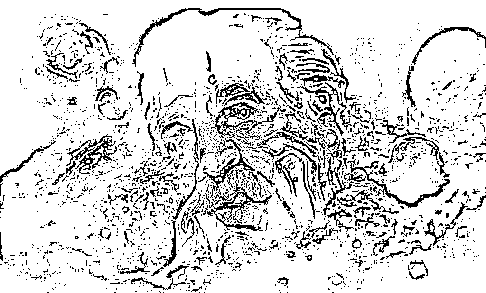
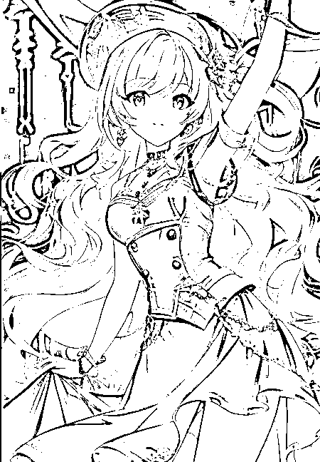
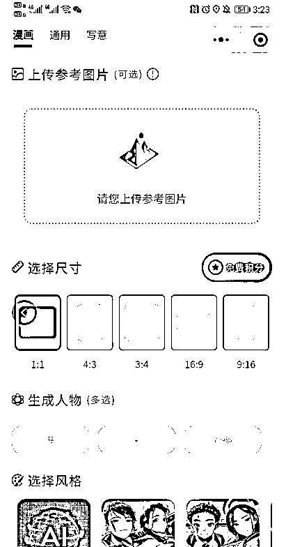
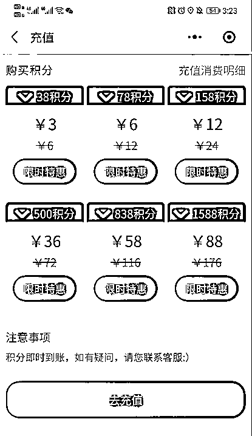
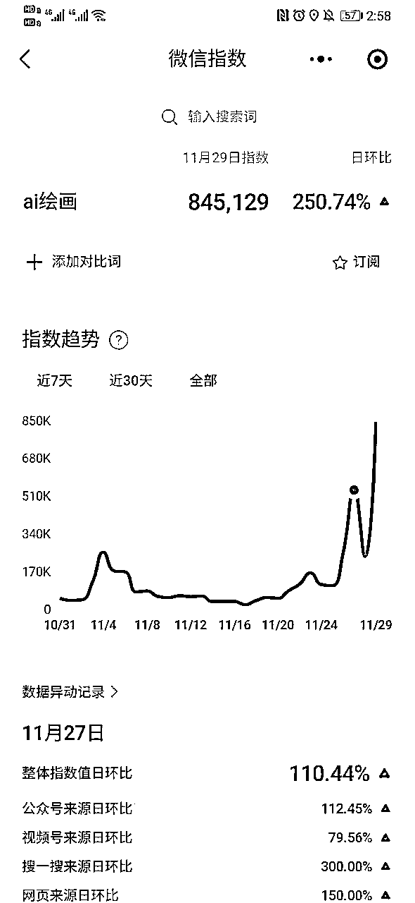
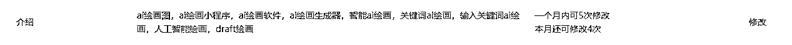
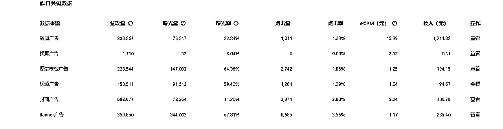
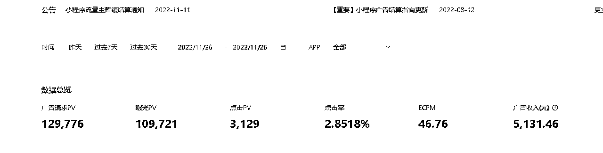
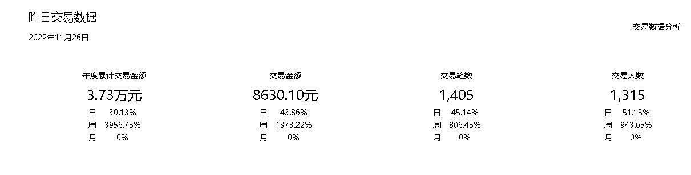

来源：https://ovyhcgsmdu.feishu.cn/docx/Zjr6dgbHIoxcp0x21SVcrwlqn8d
我尽量用最简洁的语言来讲清楚这件事情
今年2月份，国外的技术团队在通过文字生成图片这件事情上，有了非常大的突破，可以通过文字生成以下图片，非常的精美，气势恢弘的像这种

二次元的话就类似这种

任何技术的革新都会带来新的机会，不过冷静下来，还是要找好自己在这个事情中的定位，定位错了，方向就迷失了。
首先分析自己的定位
技术： 模型的训练需要大量的数据，做模型的生意显然不太现实了，另外各大大厂都推出了AI绘画的接口，目前的价格在0.10元左右

变现：
1、小程序广告和充值变现 看一次30s广告的CPC大概在0.1-0.3之间，充值价格如下：

2、抖音小程序广告变现 看一次30s广告的CPC大概在0.1-0.3之间
流量：自己之前通过操盘其他项目，有一些私域流量，并且有兼职，通过她们在公域中发布笔记、视频等方式来带来流量
所以这个生意对于我来说，收益 = 使用人次 * （ CPC的广告价格 - 接口调用费用） - 一次性投入 ，其实这里边还有个充值积分的钱，可以平摊到接口调用费用中。
使用人次越多成为唯一变量。
当然在这之前，要搞定一个小程序的搭建，这个只能够找比较专业的人来搭建好，然后直接购买部署就可以了。
流量方面我首先采用的是蹭关键词的方法：

这个是目前当下AI绘画关键词的微信指数，所以简单的设置下小红书的名字和简介就能够蹭来很多流量

当然很多事情讲究一个时机，我主要是比较早的蹭了一个已经在小红书和抖音上火起来的平台的名字，几乎百分之98的流量都来源于小程序搜索，所以关键词SEO这块目前非常重要。
其次就是在各大平台下，进行素材引流了，这个方法都是从生财里边学的，就不赘述了。
最后给各位看一下最近的结果



结尾：
这个项目其实做起来目前来说，还属于风口和运气成分居多，不过这背后其实是无数次在生财阅读各种文章后积累的项目的感觉，其实都是很简单的操作。
1、选一个靠谱的小程序供应商
2、照猫画虎一样的去蹭SEO关键词，这个几乎都被生财的专家讲烂了
3、开通流量主，设置广告
4、如果有私域流量和做内容的能力，可以自己发布视频引流量
这个项目变现的话，小程序类目，选择图片处理就可以了，不需要其他资质
欢迎各位和又闲又富的 闲富 交流！